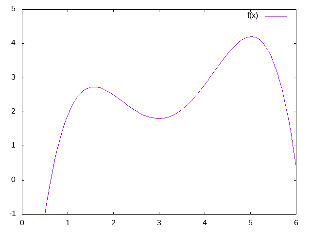

Vandermonde matrices
Intro
For context and to see what motivates the need for Vandermonde matrices, see the linear algebra system developed in the parent directory. The code is based off of the theories developed in Matrix Analysis & Applied Linear Algebra
pages 185-186 introduces the Vandermonde matix which provides us with a way to solve for polynomials that fit a set of given points.
Polynomials are equations of the form:
\begin{equation} y=a_{1}+a_{2}x+a_{3}x^{2}+a_{4}x^{3}+... \end{equation}
It's a typial function of the form y=f(x) that takes inputs x and returns outputs y and it's immediately apparant that this is non linear. Given a polynomial (ie. given it's an factors) and given a value for y there can be multiple solutions for x. At first blush this doesn't seem related to the problems we're tackling with matrices.
The critical insight that we need to understand how to use Vandermonde matrices is that it's linear in terms of it's own polynomial factors. We are ultimately interested in finding a polynomial that fits, so what we want to do is actually solve for the a_{n} polynomial factors. In other words we aren't taking y=f(x) and solving for x. We are taking a corresponding y=f(a) and solving for the polynomial factors an. The x's are baked into the f().
To see how this is built up we simply take the polynomial function and a series of points/measurements [ (x_1,y_1) (x_2,y_2) (x_3,y_3) ... ] and write out the polynomial equations out.
This is now a standard matrix problem with the a's being the unknown. The x's look nonlinear, but they're actually known values and not something we are solving for. Writen out in matrix form we get
Where all the values of the x-matrix are known. (the x-matrix is the actual Vandermonde matrix - V)
Th next trick is that we can adjust he number of terms in the polynomial (the number of exponents of x and the the number of an's) so that the matrix is always square - and in the general case non-singular. Now since we know how to solve Ax=b using the LU decomposition we can solve for all the polynomial factors an in this equivalent system Va=y - where the V is the matrix of exponents of x.
Once we solve for the an's we can then reconstruct the non-linear polynomial equation we started looking at in the beginning
\begin{equation} y=a_{1}+a_{2}x+a_{3}x^{2}+a_{4}x^{3}+... \end{equation}
It will not only hold true for all our (x,y) points but also for all other values of x we want to test - so we will have in the end fit a polynomial curve through all our points.
Setup
To start we import ELisp linear algebra function we've developed
(load-file "matrix.el")
Code
Next we build the Vandermonde matrix which is the matrix of x's and their exponents
(defun matrix-vandermonde (list-of-xs number-of-points) "Build a Vandermonde matrix of the appropriate rank from a LIST-OF-Xs" (defun matrix-build-polynomial-list (x degree) "Build a list of (X,X^2,X^3,..,X^DEGREE)" (cond ((zerop degree) '(1)) (t (cons (expt x degree) (matrix-build-polynomial-list x (1- degree)) )))) (defun matrix-vandermonde-data (list-of-xs degree) "Builds the data vector of the Vandermonde matrix" (cond ((null list-of-xs) '()) (t (append (reverse (matrix-build-polynomial-list (car list-of-xs) degree)) (matrix-vandermonde-data (cdr list-of-xs) degree))))) (matrix-from-data-list number-of-points number-of-points (matrix-vandermonde-data list-of-xs (1- number-of-points))))
Then given a set of points, we can fit a polynomial to them by using our input solver to solve for the polynomial factors.
(defun matrix-fit-polynomial (x-coordinates y-coordinates) "Given a list of x and y coordinates, solve for a polynomial that fits them using a Vandermonde matrixs. The result is a vector of factors 'a' that should be used in the standard order: a_1+a_2*x+a_3*x^2+a_4*x^3+... etc" (let* ((number-of-points (length x-coordinates)) (vandermonde-matrix (matrix-vandermonde x-coordinates number-of-points)) (PLU (matrix-PLU-decomposition vandermonde-matrix))) (matrix-solve-for-input PLU (matrix-from-data-list number-of-points 1 y-coordinates))))
To see it work we can try feeding in some random points and see what kind of polynomial we get
(matrix-data (matrix-fit-polynomial '(1.0 2.0 3.0 4.0 5.0) '(1.9 2.5 1.8 2.8 4.2)))
| -7.299999999999994 | 17.008333333333322 | -9.920833333333327 | 2.2916666666666656 | -0.17916666666666659 |
Then we take these factors and stick them into gnuplot to get a quick plot
f(x) = -7.299 + 17.00833*x + -9.920833*x**2 + 2.29166*x**3 + -0.179166*x**4 set xrange[0:6] set yrange[-1:5] plot f(x)

I don't have the original points plotted here, but by visual inspection you can see that the curve passes through all of the points we started with.